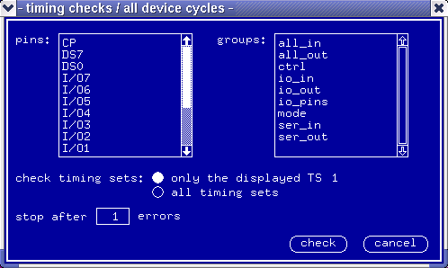

Checking for All Possible Combinations of Device Cycle Sequences
The function lets you check out all possible device cycle sequences for the selected pins or pin groups. You can check the combinations occurring:
- either in the timing set currently displayed in the Timing Setup only,
- or in all timing sets.
The check is executed for the current waveform set.
To run the check proceed as follows:
- In the Check pulldown menu select the timing
DevCyc... option.
The dialog box timing checks / all device cycles appears, see the figure below.

- To check the combinations occurring in the displayed timing set click the radio button labeled only the displayed TS.
- To check the combinations occurring in all timing sets click the all timing sets radio button.
- In the entry field labeled stop after type the number of errors after which the check should stop.
- Click check.
The system runs the check taking the pins and/or pin groups sequentially, and displays a report in the report window.